2026-08-05 · 產出 skill style-transfer-sref · 日誌見 log.md
| style-transfer-qwenstyle | style-transfer-sref（本次） | |
|---|---|---|
| 輸入 | content 圖 + style 圖 | 只有 style 圖 + 中文題材詞 |
| 保留 | content 的構圖／人物／物件 | 只保留畫風，題材換掉 |
| 典型指令 | 「把這張轉成那個風格」 | 「用這個風格畫一隻粉色八爪魚」 |
model card 的英文寫 "style transfer"，很容易誤判成同一件事。實際輸入形態完全不同。
參考圖是平塗賽璐璐 anime，題材「粉色八爪鱼」。prompt 只給名詞時，開不開 sref 幾乎同圖：
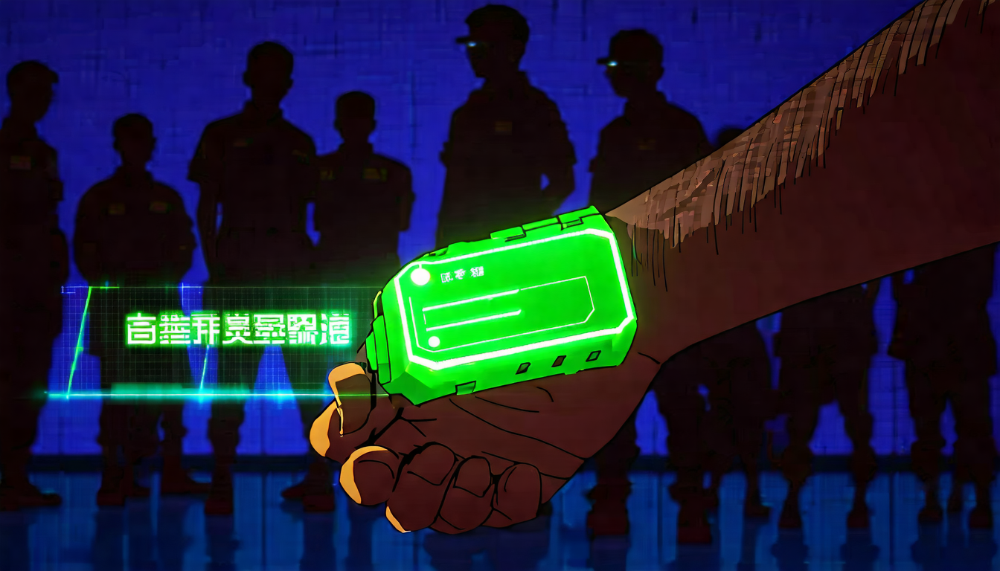
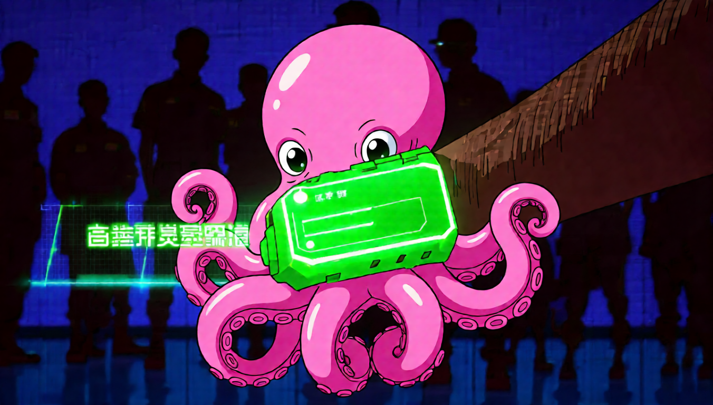
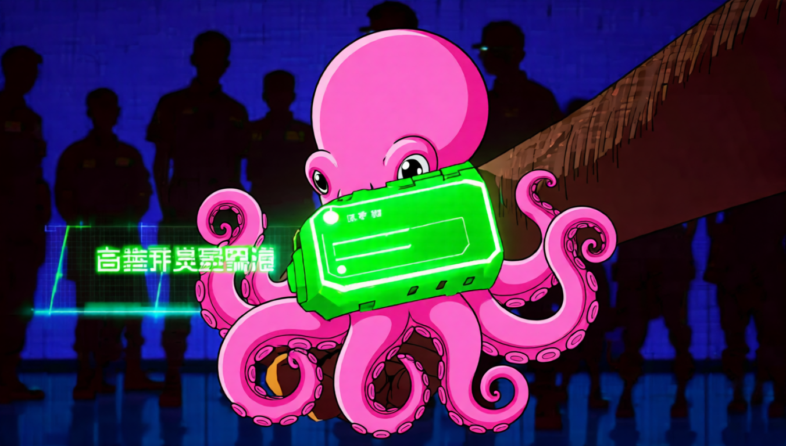
一度判定「LoRA 沒生效」。實際上是測試素材不夠格——短 prompt 走的是底模 2509 原生的 編輯能力，根本沒踩到 LoRA 的訓練分佈（風格圖 + 長篇編輯指令）。
3D 黏土公仔風格，題材「一只戴帽子的柴犬」，兩邊用同一段 VLM 指令：
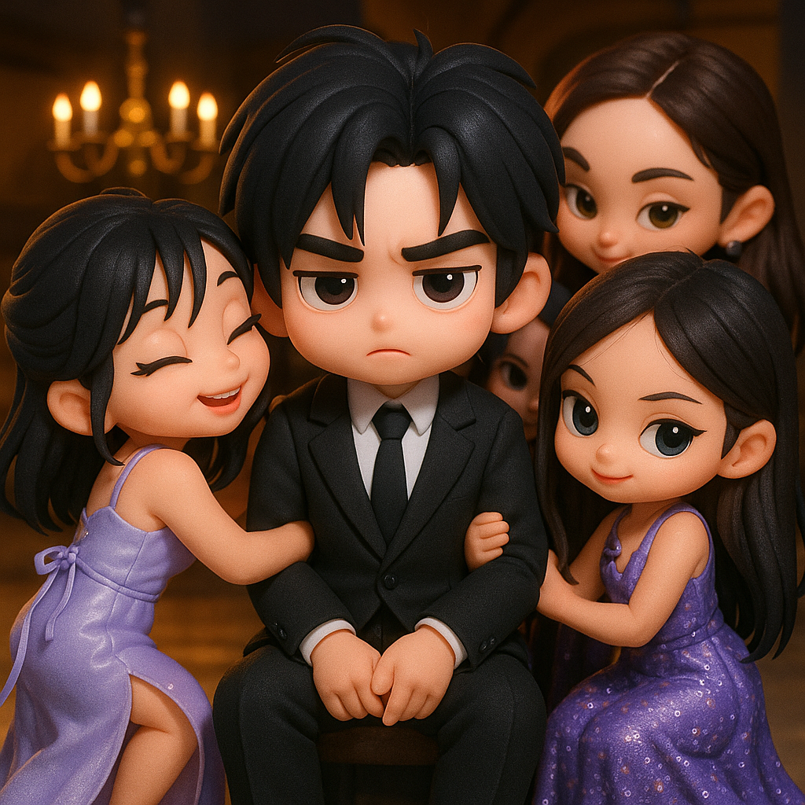
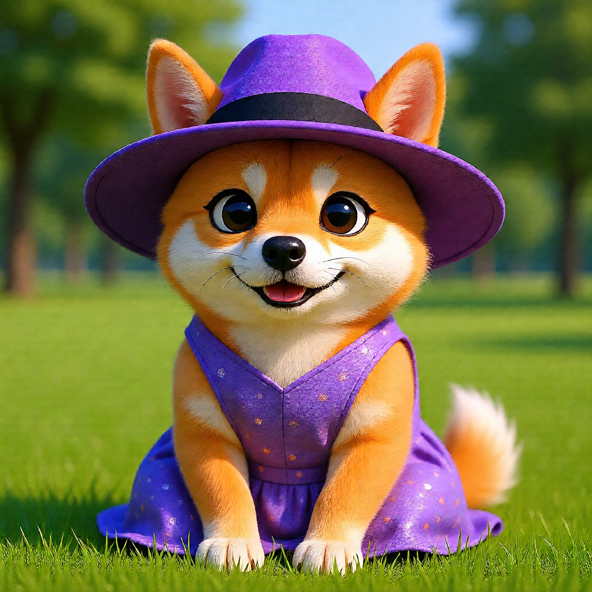
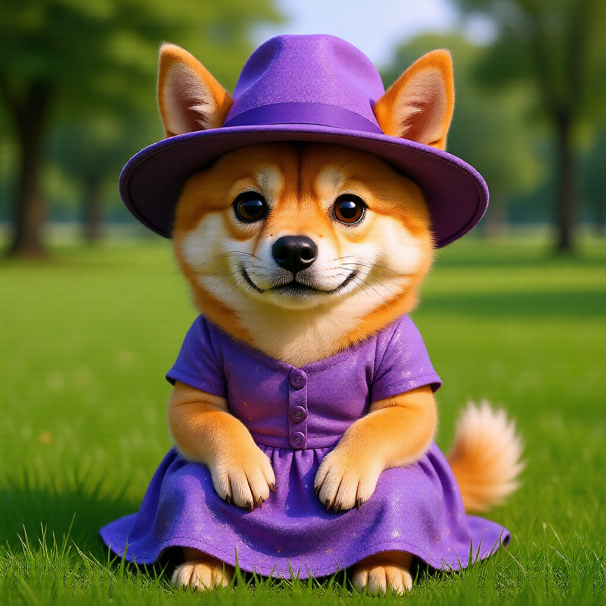
顆粒感綠調底片風格。VLM（Qwen2.5-VL-7B）自己寫出替换为一个简单的白色背景，
出圖直接漂白：
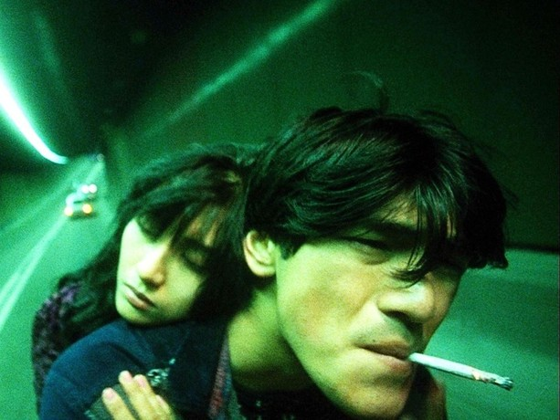
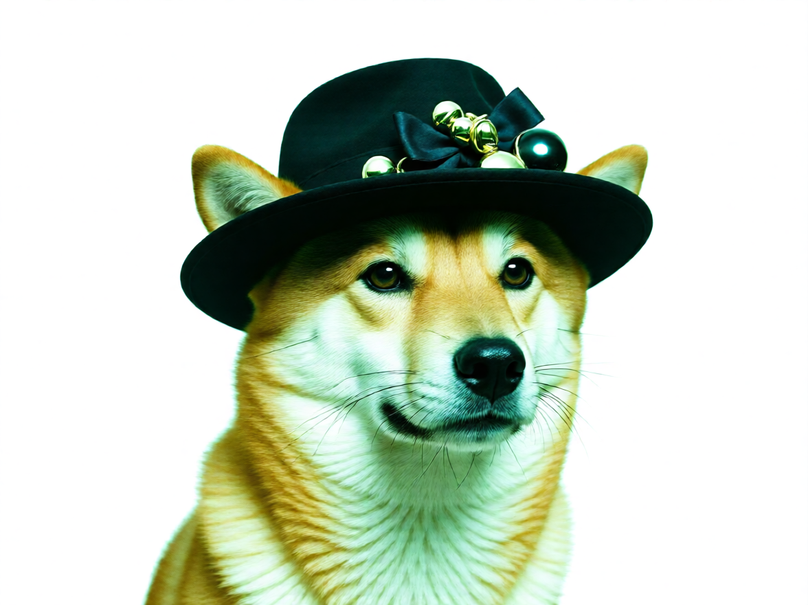
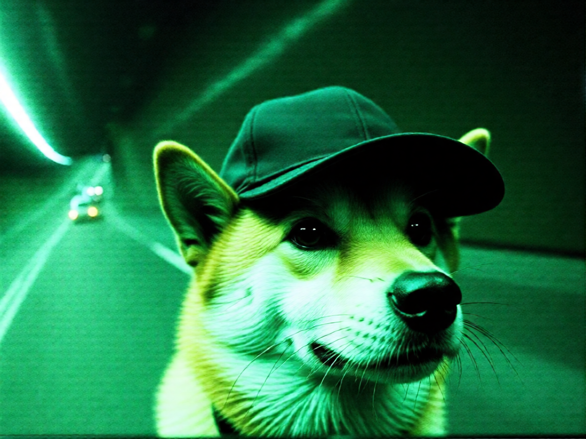
只改了那段文字，L 從 203 掉到 84、S 從 0.23 回到 0.77。隧道、綠調、顆粒、暗角全部回來。 根因確定在 prompt。
官方那段指令是配 Qwen3-VL 調的，Qwen2.5-VL-7B 守不住。在後面接一段硬約束（_GUARD），
禁止「純色背景／更換場景／還原成自然顏色／新增裝飾物」：
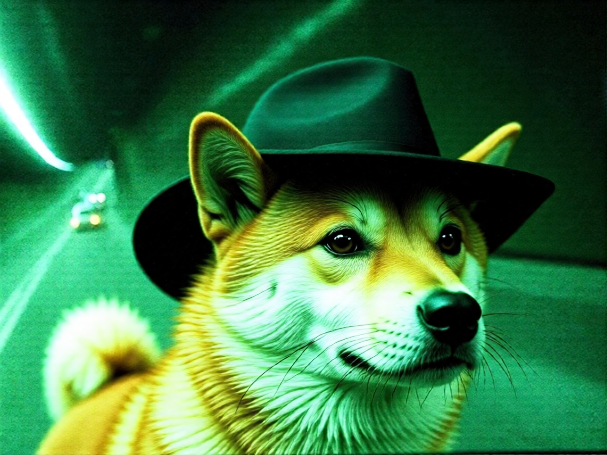
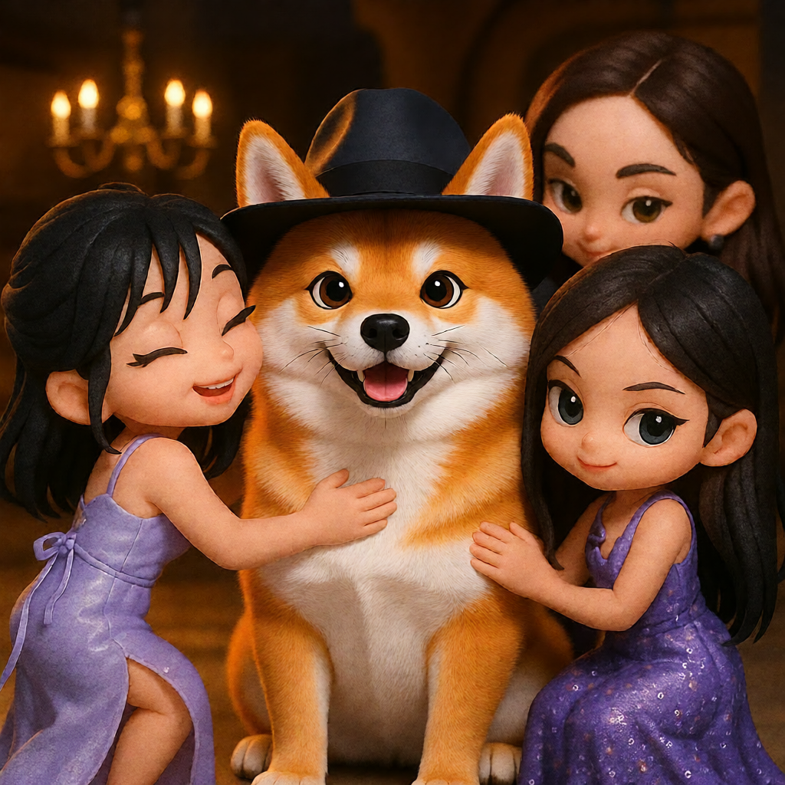
| 風格圖 | 無護欄 | 有護欄 | 參考值 |
|---|---|---|---|
| ref_6 | L203 暖+6 S0.23 | L95 暖−10 S0.72 | L69 暖−11 S0.69 |
| ref_4 | L110 暖+47 殘留0.018 | L81 暖+57 殘留0.594 | L65 暖+38 |
護欄不完美——7B 仍偶爾寫出「调整颜色使其符合自然颜色」這種違反護欄的句子。 所以 skill 裡「人工複核編輯指令」那步不能拿掉。
| 案例 | 性質 | 結果 |
|---|---|---|
| style_ref_1 | 平塗賽璐璐 anime、霓虹賽博 | 通過（硬邊平塗＋描線保住） |
| style_ref_4 | 3D 黏土公仔、暖色吊燈室內 | 通過（塑料質感＋場景保住） |
| style_ref_6 | 顆粒感綠調底片、失焦暗角 | 通過（隧道＋綠調＋顆粒保住） |
--strength ≠ 1.0、2511 底模、官方的 Qwen3-VL-4B。AILab_QwenVL 節點。
改成把 VLM 搬到 ComfyUI 外面——結果更好，因為指令才能被人工複核。